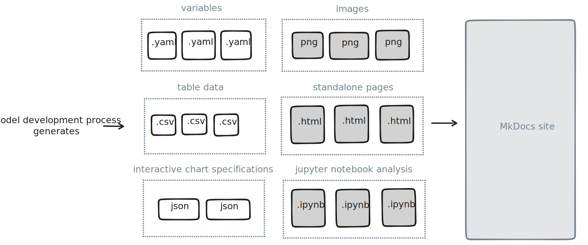

Reproducible Reports with MkDocs
In the post Using MkDocs for technical reporting I explained how MkDocs works and why it's a good choice for writing technical reports.
In this post I'll explain how to work with different MkDocs plugins to make your documentation more reproducible. I find the topic exciting as the combination of these plugins is especially powerful. That's also why I wrote multiple MkDocs plugins and contributed to many more to make the workflow even smoother.
We'll use the example of documenting a machine learning model because the building process is quite iterative. Because models evolve and update frequently up to date model documentation that can keep up is essential.
What artifacts should be reproducible
A model development proces might generate the following artifacts:
- Images: Binary images files, like
.pngfiles created by a plotting library. - Variables: A list of one or more variables in
.yamlfiles, such as for example training periods. - Tables: Data structured in tabular manner, like
.csvfiles - Chart data: Data and chart specifications in
.jsonfiles - Standalone pages:
.HTMLfiles generated by tools like pandas-profiling - Notebooks: Relevant
.ipynbfiles with deep-dives that combine code + text + output
We want to combine all of these artifacts into a coherent MkDocs documentation site.
Schematically:

Generating artifacts on build
Obviously you'll first need to write the python code that (re)generates all the artifacts you want to include in your model documentation.
Here's a common project structure, where scripts/ contains python code to generate artifacts that output to docs/assets/.
.
├── docs/ # Project documentation
| |── assets/ # Stores generated artifacts
| └── index.md
├── notebooks/ # Project related Jupyter notebooks
├── src/ # Project source code
├── scripts/ # Stores scripts to generate artifacts
└── mkdocs.yml # MkDocs configuration
You could trigger building artifacts manually, by building a CLI (see click, typer or python-fire) or by using a makefile. But you could also trigger building artifacts on mkdocs build (or mkdocs serve) by using the mkdocs plugin mkdocs-simple-hooks. For example, if you have a function generate() in scripts/artifacts.py:
Because building artifacts can take quite some time for larger ML models, you can optionally disable the plugin while writing documentation by using environment variables:
# mkdocs.yml
plugins:
- mkdocs-simple-hooks:
enabled: !ENV [ENABLE_MKDOCS_SIMPLE_HOOKS, True]
hooks:
on_pre_build: "scripts.artifacts:generate"
Including tables
Probably one of the most common artifacts are tables. I wrote mkdocs-table-reader-plugin to make it easy:
And then in any markdown file you can insert a table using {% raw %}{{ read_csv("tablename.csv") }}{% endraw %}.
Including variables
Another very common artifacts are variables; basically singular named values. mkdocs-markdownextradata-plugin is an excellent plugin to help you get the job done:
Add a file in docs/assets/variables like:
And now you can insert variables in any markdown file using the syntax {% raw %}{{ data.auc_train }}{% endraw %}.
Including charts
A variant on a table is a chart. Basically this is tabular data with some specification on how to visualize it. vegalite is an excellent solution, and I wrote mkdocs-charts-plugin to bring support to MkDocs.
# mkdocs.yml
plugins:
- charts
extra_javascript:
- https://cdn.jsdelivr.net/npm/vega@5
- https://cdn.jsdelivr.net/npm/vega-lite@5
- https://cdn.jsdelivr.net/npm/vega-embed@6
markdown_extensions:
- pymdownx.superfences:
custom_fences:
- name: vegalite
class: vegalite
format: !!python/name:mkdocs_charts_plugin.fences.fence_vegalite
Now you can insert chart specifications anywhere in a markdown file, and have it rendered as a chart.
```vegalite
{
"description": "A simple bar chart with embedded data.",
"data": {"url" : "assets/charts/data/basic_bar_chart.json"},
"mark": {"type": "bar", "tooltip": true},
"encoding": {
"x": {"field": "a", "type": "nominal", "axis": {"labelAngle": 0}},
"y": {"field": "b", "type": "quantitative"}
}
}
```
Note that the data is located in assets/charts/data/basic_bar_chart.json, which means you can update it separately.
Including notebooks
Especially when building machine learning models, there might be separate, fairly self-contained deep dives in notebooks you would like to include in your documentation. For example an experiment with different target definitions, or a review of fairness aspects. A notebook already contains code, text and output (tables and images).
The mknotebooks plugin allows you to insert entire jupyter notebooks (.ipynb files) directly into your MkDocs site. For example:
It's not well documented, but you can optionally remove input cells (the code) from the notebooks. See this example.
Including HTML
There are some great machine learning tools out there that can generate stand-alone HTML reports. For example pandas-profiling for exploratory data analysis, or great expectations for data profiling.
You can export those files to docs/assets/html and simply link to them from your MkDocs navigation:
If it's a small snippet of HTML, you can also use the snippets markdown extension to embed external files, see the example the mkdocs-material docs.
Wrapping up
If you need even more flexibility in inserting content, you can use the mkdocs_macros_plugin to define python functions. Using our machine learning example, you could write a python function get_model_auc() that queries MLFlow and returns a score. You can then use it anywhere in your markdown files using {% raw %}{{ get_model_auc() }}{% endraw %}.
You might also want to use mkdocs-git-authors-plugin to automatically add authors of each page by using information from git commits, or mkdocs-git-revision-date-localized-plugin to add the last edited date to each page.
With a now fully reproducible MkDocs website, you can use mkdocs-print-site-plugin export to a PDF or a standalone HTML file (that you can share over HTML).